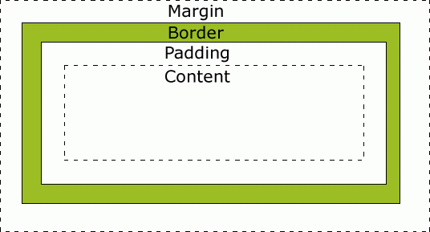

¡Bienvenidos a nuestra aplicación!
Estructura básica de HTML5
Las páginas HTML se dividen en dos partes: la cabecera y el cuerpo. La cabecera incluye información sobre la página, como son su título y su idioma. El cuerpo incluye todos sus contenidos, como párrafos de texto y elementos multimedia.
El cuerpo (denominado body en inglés) aporta todo lo que el usuario ve en su pantalla y la cabecera (denominado head en inglés) contiene todo lo que no se ve en la pantalla (con la única excepción del título de la página, que los navegadores muestran como título de sus ventanas o pestañas).
A continuación mostramos el código HTML de una página web muy sencilla:
<!DOCTYPE html>
<html lang="es">
<head>
<title>El primer documento HTML</title>
<link rel="stylesheet" type="text/css" href="/css/estilos.css"/>
<script type="text/javascript" src="/js/codigo.js"/>
<meta charset="UTF-8"/>
</head>
<body>
<p>El lenguaje HTML es <strong>tan sencillo</strong> que
prácticamente se entiende sin estudiar el significado
de sus etiquetas principales</p>
</body>
</html>
Ahora vamos a conocer las tres etiquetas principales de un documento HTML
- <html>: nos indica donde está el comienzo y el final de un documento HTML. Ningún elemento o contenido puede colocarse antes o después de la etiqueta <html> (con una sola excepción, que sería la de definir arriba del todo el DOCTYPE). En el interior de la etiqueta <html> se definen la cabecera y el cuerpo del documento HTML; todo lo que se coloque fuera de la etiqueta <html> se ignora.
- <head>: delimita la parte de la cabecera del documento. La cabecera contiene información sobre el HTML, como por ejemplo su título y el idioma de la página. Los contenidos indicados en la cabecera no son visibles para el usuario, con la excepción de la etiqueta <title>.
- <body>: delimita el cuerpo del documento HTML. El cuerpo encierra todos los contenidos que se muestran en pantalla (párrafos de texto, imágenes, tablas). En general, el <body>de un documento contiene cientos de etiquetas HTML, mientras que el <head> contiene solo unas pocas.
Por último, hemos añadido en la etiqueta head 2 elementos nuevos que son link y script. El elemento link serviría para incluir en nuestra página un estilo en formato CSS; el elemento script nos sirve para incrustar en nuestra página código JavaScript
Formato básico del texto
La etiqueta <p> </p> sirve para definir párrafos.
La etiqueta <br/> sirve para insertar un salto de línea cuando nos interese.
La etiqueta <hr/> sirve para insertar una línea horizontal en el texto.
Los títulos se pueden destacar haciendo uso de las etiquetas <h1>, <h2>, <h3>, <h4> hasta <h6>,
Ejemplo:
Esto es un h1
Esto es un h2
Esto es un h3
Esto es un h4
Esto es un h5
Esto es un h6
Para dar formato al texto podemos usar las siguientes etiquetas:
La etiqueta <strong> y </strong> para destacar una parte del texto. Normalmente el texto incluido entre esas etiquetas se representa en negrita.
<em> y </em> se emplea para enfatizar un texto; habitualmente se representa en cursiva.
Tambien disponemos de la etiqueta <pre>
Etiquetas semánticas
Este tipo de tiquetas es utilizado para indicar el tipo de contenido que tiene y para hacer al programador la tarea mas facil.
Header
Es la etiqueta que permite marcar la cabecera, lo que hacer es identificar a todos los parrafos, listas, etc.. que pertenecen a la cabecera del documento, esta etiqueta al igual que las demasno dan formato al texo solo sirven para identificar los objetos de dentro.
Ejemplo de utilización
.......
Footer
Sirve para marcar el pie de página, sección u articulos.La información que suele ir dentro es los datos de los creadores, el Copyright, etc..
Ejemplo de utilización
.......
Section
Es otro elemnto que al igual que el Header sirve para separar diferentes partes del documento.
Ejemplo de utilización
.......
Nav
Es la etiqueta que marca todo lo que hay dentro como sección de enlaces, o dicho mas claro es una barra de navegación.
Ejemplo de utilización
.......
Article
Esta etiqueta como su nombre describe es para almacenar articulos sobre cualquier tema, su utilización mas exacta es introducir esta etiqueta dentro de la etiqueta Section.
Ejemplo de utilización
.......
Hgroup
Es una etiqueta qu permite agrupar varios titulos para darle formato posteriormente en el CSS.
Ejemplo de utilización
.......
Figure
Es la etiqueta que permite agrupar los elementos relacionados con imagenes como la propia imagen, el titulo, el pie, los parrafos, etc...
Ejemplo de utilización
.......
Figcaption
Permite indicar el título de una imagen, dentro de un elemento figure
Ejemplo de utilización
.......
Aside
Es una etiqueta para marcar texto dentro de un artículo para que no se tenga en cuenta como parte del texto del artículo, sino como un texto aparte que permite realizar aclaraciones al artículo
Ejemplo de utilización
.......
Listas
Las listas son conjuntos items que se muestran ordeandos. En HTML encontramos 3 tipos de listas: las listas ordenadas, las desordenadas y las descriptivas.
1. Listas ordenadas
Las listas ordenadas son aquellas que los componentes de la lista siguen un orden numérico:
- Item 1
- Item 2
- Item 3
- Item 4
- Item 5
Esta lista está formada por dos etiquetas. La etiqueta contenedora que define que será una lista ordenada: <ol> y </ol> (que es la abreviación para "ordened list") y una etiqueta para cada uno de los items de la lista: <li> y </li>
Tipos de listas ordenadas
A estas listas, además, se le puede modificar el tipo de numeración que se muestra, siendo la numérica decimal la por defecto
Para modificar esto habrá que añadir un atributo type a la etiqueta contenedora: <ol type="A">
- Item 1
- Item 2
- Item 3
- Item 4
- Item 5
Los type posible son:
<ol type="1">Para la numeración por defecto
<ol type="A">Cambiará los números por letras en mayúsculas
<ol type="a">Cambiará los números por letras en minúscula
<ol type="I">USaremos los números romanos en mayúscula
<ol type="I">USaremos los números romanos en minúscula
2. Listas desordenadas
Las listas desordendas son las que a cada item le precede un dibujo o símbolo
Igual que las ordendas se forman con una etiqueta contenedora: <ul> (Unordened List) y <li> para cada elemento de la lista
- Item 1
- Item 2
- Item 3
- Item 4
- Item 5
Aquí también existe la posibilidad de modificar el símbolo usando el atributo type dentro de la primera etiqueta contenedora
Los type posible son:
<ul type="disc">Esta es la opción por defecto
-
<ul type="square">Cambiará los círculos por cuadrados
<ul type="circle">Usará círculos vacíos
<ul type="none">No mostrará nada
Listas descriptivas
Estas son unas listas especiales que permite listar items y, además, ponerles una pequeña descripción a cada uno
Este tipo de lista es un poco más complicada ya que tiene una etiqueta más que las anteriores, siendo estas la etiqueta contenedora <dl></dl> que será la que cree la lista, y dentro de esto cada item se creará con <dt></dt> y <dd></dd>para la descripción de estos
- -Este es el item 1
- -Este es el item 2
- -Este es el item 3
Tablas
Las tablas en HTML utilizan los mismos conceptos de filas, columnas, cabeceras y títulos que los que se utilizan en cualquier otro entorno de publicación de documentos. Las tablas de HTML puede contener elementos simples, agrupaciones de filas y de columnas, cabeceras y pies de tabla, subdivisiones, cabeceras múltiples y otros elementos complejos.
Las tablas más sencillas de HTML se definen con tres etiquetas: <table> para crear la tabla, <tr>para crear cada fila y <td> para crear cada columna.
A continuación se muestra el código HTML de una tabla sencilla:
<table>
<tr>
<th>Curso</th>
<th>Horas;</th>
<th>Horario;</th>
</tr>
<tr>
<td>CSS</td>
<td>20</td>
<td>16:00 - 20:00</td>
</tr>
<tr>
<td>HTML</td>
<td>20</td>
<td>16:00 - 20:00</td>
</tr>
<tr>
<td>JavaScript</td>
<td>60</td>
<td>16:00 - 20:00</td>
</tr>
</table>
Ahora mostraremos el resultado de esa tabla realizada anteriormente:
| Curso | Horas | Horario |
|---|---|---|
| CSS | 20 | 16:00 - 20:00 |
| HTML | 20 | 16:00 - 20:00 |
| JavaScript | 60 | 16:00 - 20:00 |
Ahora vamos a conocer la función de las etiquetas principales en las tablas y demás cosas
La etiqueta <table> encierra todas las filas y columnas de la tabla. Las etiquetas <tr> (del inglés "table row") definen cada fila de la tabla y encierran todas las columnas. Por último, la etiqueta <td> (del inglés "table data cell") define cada una de las columnas de las filas, aunque realmente HTML no define columnas sino celdas de datos.
Al definir una tabla, se debe pensar en primer lugar en las filas que la forman y a continuación en las columnas. El motivo es que HTML procesa primero las filas y por eso las etiquetas <tr> aparecen antes que las etiquetas <td>.
Normalmente, algunas de las celdas de la tabla se utilizan como cabecera de las demás celdas de la fila o de la columna. En este caso, HTML define la etiqueta <th> (del inglés "table header cell") para indicar que una celda es cabecera de otras celdas.
Las tablas complejas suelen disponer de una estructura irregular que junta varias columnas para formar una columna ancha o une varias filas para formar una fila más alta que las demás. Para fusionar filas o columnas, se utilizan los atributos rowspan y colspan respectivamente.
- colspan: Combina la celda actual con el número de celdas a la derecha que se indique. Por ejemplo colspan="3" une esta celda con las dos que tiene a su derecha, formando una combinación de tres celdas en horizontal.
- rowspan: Combina la celda actual con el número de celdas hacia abajo que se indique. Por ejemplo rowspan="3" une esta celda con las dos que tiene hacia abajo, formando una combinación de tres celdas en vertical.
Ejemplo de uso:
<table border="1">
<tr>
<td> </td>
<td> </td>
<td colspan="2"> </td>
</tr>
<tr>
<td> </td>
<td colspan="2"> </td>
<td rowspan="2"> </td>
</tr>
<tr>
<td rowspan="3"> </td>
<td> </td>
<td> </td>
</tr>
<tr>
<td colspan="3"> </td>
</tr>
<tr>
<td colspan="3"> </td>
</tr>
</table>
Ahora mostraremos el resultado de esa tabla realizada anteriormente:
| a | |||
Modelo de cajas
La etiqueta <div> y </div> sirven para crear cajas, en las cuales nosotros podremos meter nuestro contenido.
Con estas cajas podremos modificar la colocación nuestro contenido de una forma mas facil ya que solo tendremos que modificar la posición de la caja.
Los atributos mas importantes de nuestras cajas son los siguientes:
Margin:
Es la distancia que se encuentra entre el borde y el limite de la caja
Border:
El brode delimita el tamaño de la caja
Padding:
Es la distancia que hay entre el borde y el contenido de la caja
Podemos verlo de forma mas clara con la siguiente foto:
Tambien disponemos de las cajas en linea las cuales se desfinen con las etiquetas <span>y </span>
El contenido de estas cajas suele ser una palabra o una frase corta, la cual necesitamos modificar.
Formularios
Los formularios son elementos de paginas web que permiten recabar información para enviarla a un servidor y que la procese
Etiquetas
Form
El formulario HTML comienza con una etiqueta form, dentro de ella se colocan todos
los controles del formulario. Esta etiqueta
posee dos atributos que son:
Action --> El que contiene la URL del sitio Web
que procesara la información
Method --> Permite indicar qué instrucción http vamos
a utilizar para pasar la información al destino de nuestro formularios
Cuadros de Texto, imput type = "text"
Los cuadros de texto permiten recoger texto que escriba el usuario. Su sintaxis es:
imput type="text" name="nombre"> </imput>Ejemplo de utilización
Cuadro de contraseña, input type="password"
Funcionan como los cuadros de texto, sólo que el texto que se introduce se oculta, mostrando sólo puntos o asteriscos. La sintaxis es:
imput type="password" name="nombre"> </imput>Ejemplo de utilización
Botones
Los botones son controles del formulario en los que no se puede escribir
Boton de Envio
Sirve para la comunicación entre el formulario y la pagina. La sintaxis es:
imput type="submit" value="texto del boton"> </imput>Botón de reset
imput type="reset" value="texto del boton"> </imput>Botón Genérico
En los formularios no se usa para enviar o configurar la información, sino que se utiliza normalmente para capturar su pulsación
Ejemplo de utilización
,.......Casillas de Verificación
Se usan igual que los botones de radio, aunque no se recomienda agrupar varios con el mismo nombre ya que las casillas se asocian a valores que se activan o desactivan.
Ejemplo de utilización
........Cuadros Combinados
Un cuadro combinado prmit el uso de una lista de opciones en la que se puede elegir la deseada
Ejemplo de utilización
........Cuadros de selección de archivo
Como su nombre indica es una etiqueta que t permite elegir el archivo que deseas enviar.
Ejemplo de utilización
........Cuadros de texto Multilinea
Se forma con la etiqueta textarea qu permite colocar un cuadro de texto de varias líneas para que el usuario pueda introducir un texto largo
Ejemplo de utilización
........Agrupación de Controles, fildset
La etiquta fildset permite agrupar controles para que a la vista sea mas cómodo su utilización.
Ejemplo de utilización
........Cuadros de Texto Especializados
input type="number". Acepta sólo números.
input type="email". Acepta sólo direcciones de correo electrónico
input type="url". Acepta sólo direcciones URL.
input type="date". Acepta sólo fechas válidas.
input type="time". Acepta sólo horas válidas;
input type="datetime". Acepta fecha y hora.
input type="month". Acepta sólo números del 1 al 12, referidos a un mes.
input type="search". Presenta un cuadro de texto pensado para hacer búsquedas.
input type="tel". Permite introducir números de teléfono.
input type="range". Presenta un control para elegir datos entre un rango.
input type="color". Presenta un control de selección de colores.
Atributos
Atributo Required
Este atributo obliga a rellenar
con algún valor el control en el que se usa.
La sintaxis es:
imput type="text" id="texto" required="required"> </imput>
Atributo Multiple
Permite en los cuadros de entrada de texto que el usuario pueda indicar varios valores si les separa con comas.
Atributo pattern
Permite colocar una expresión regular en un cuadro de texto que, atoriamente, tendrá que cumplir el cuadro en el que se use el atributo.
Ejemplo de utilización
........Atributo Placeholder
Un placeholder es un texto que ayuda a rellenar un cuadro de un formulario
Ejemplo de utilización
........Atributo Autocomplete
Permite activar (valor on) o desactivar (valor off) el autocompletado del navegador
Enlaces
Los enlaces en HTML se designan con la etiqueta <a></a> y con el atributo esencial href que es el que indicará el link del hiperenlace.
La estructura más básica sería:<a> href:"https://www.iesvirgendelcarmen.com/ies/index.php">IES Virgen del Carmen</a> que crearía un link hacia la página especificada con lo que sea que haya entre las etiquetas.
IES Virgen del CarmenPor defecto todos los enlaces tienen el mismo código de colores:
- Uno que no se haya visitado será color azul
- Uno que sí se haya visitado será color morado
- Y cuando uno esté activado (como cuando se pulsa) se pondrá rojo
Lista de atributos posibles para un enlace
Algunos de los atributos más importantes que soporta HTML5 son:
| Attributo | Valor | Descripción |
|---|---|---|
| download | Nombre de archivo | Especifica que este enlace descargará el archivo que se le de |
| href | URL | Dirección a la que redireccionará el enlace |
| target | _blank _parent _self _top framename | Con este atributo podremos hacer que el enlace se abra sin pisar la págia en la que ya estemos |
| media | media_type | Con esto le decimos de qué tipo es el documento enlazado |
Imagenes como enlace
Otra funcion útil de los enlaces es que permiten que sea una imagen la que tenga que ser pulsada para activar el link. Para esto lo único que hay que hacer es usar una etiqueta <a> dentro de la etiqueta de enlace. Ejemplo:
Multimedia
En una web podemos meter muchos tipos de multimedia, nosotros vamos a desglosarlos:
Imagenes:
Para introducir imagenes tenemos que usar los elementos <img> la cual cerramos en la misma linea colocando al final del elemento la barra: "/"
Para introducir la imagen debemos poner el atributo "src" en el cual tenemos que meter la ruta , tanto absoluta como relativa, de nuestra imagen.
Otro atributo que debemos poner en la imagen es el atributo "alt" en el cual tenemos que introducir un texto por si la foto no se carga o no es compatible con nuestro navegador, nos diga que foto es.
Esta etiqueta soporta los archivos de extension: .jpg, .png, .gif, etc.
En este elemento también podemos modificarle la altura y la anchura con los atributos "height" y "width" respectivamente
Ejemplo:
<img src="url" alt="texto alternativo" heigth="500" width="600"/>
En HTML5 se ha introducido el elemento <picture> en la cual podemos introducir varias imagenes y nuestro navegador mostrara la primera imagen que sea compatible
Para usar este elemento tenemos que abrirlo con <picture> y cerrarlo con </picture>. Una vez hacemos eso, le introducimos dentro los elementos <src> en los que indicamos la ruta de nuestra imagen.
Para añadir nuestra foto tenemos que añadir al elemento <src> el atributo "srcset" en el cual introducimos la ruta de nuestra foto.
Dentro del elemento <picture>, también podemos introducir el elemento <img>
Ejemplo:
<picture>
<source srcset="url" />
<source srcset="url" />
< img src="url" alt="texto alternativo" />
</picture>
Audio
Para introducir audio en nuestra WEB, tenemos que usar el elemento <audio> y cerrarlo con el elemento </audio>
A este elemento debemos introducirle el atributo "controls" para que nos muestre los controles del audio
Una vez que abrimos el elemento le introducimos el audio con el elemento <src> en los que le indicamos la ruta de nuestro archivo y el tipo de archivo que es. Podemos introducirle mas de un archivo para que el navegador nos reproduzca el archivo que lo soporte.
Este elemento soporta archivos de tipo: .mp3, .Wav, .Ogg
Ejemplo:
<audio controls>
<source src="url" type="audio/mpeg"/>
<source src="url" type="audio/ogg/>
</audio>
Video
El elemento <video> y </video> sirve para introducir videos en nuestra pagina
A este elemento debemos ponerle los atributos "controls" , "width", "height". Con estos atributos le ponemos los controles, la altura y la anchura del video.
Una vez que abrimos el elemento <video>, para introducir el archivo tenemos que usar el elemento <src> en el que introducimos la ruta del archivo y el tipo de archivo. Podemos introducir mas de un archivo para que el navegador reproduzca el archivo que soporta.
Este elemento soporta los archivos con extensión: .mp4, .Ogg, .WebM
<video width="220" height="140" controls>
<source src="url" type="video/mp4"/>
<source src="url" type="video/ogg/>
</audio>
Canvas
La etiqueta canvas es muy simple de agregar, sólo tiene tres atributos posibles, el ID con que la identificaremos, el ancho y el alto. Incluso estos dos últimos son opcionales y si no los ponemos, tendrá un tamaño por defecto de 300x150:
<canvas id="nombre" width="valor" height="valor"></canvas>
Puesta así no veremos absolutamente nada ya que es transparente aunque con CSS es posible agregarle algunas propiedades como márgenes, bordes, fondos, etc. Es que, en realidad, lo que hace la etiqueta no es otra cosa que crear un "lienzo", un espacio particular en donde podremos dibujar pixel por pixel utilizando JavaScript.
Para empezar a manipular el contenido de nuestro canvas, debemos empezar a escribir scripts; lo elemental es poder identificarla y para eso está el ID
A partir de eso, usaremos la variable para darle órdenes.
var canvas = document.getElementById('canvas');
var ctx = canvas.getContext('2d');
ctx.fillStyle = 'red';
ctx.fillRect(10, 10, 100, 100);
El resultado del codigo anterior es:
WCAG
Acrónimo de "Web Content Accessibility Guidelines 1.0", traducido como Pautas de accesibilidad al contenido web" son un conjunto de pautas desde el 5 de mayo de 1999 aprobado por W3C que explica la forma de crear webs para la gente con problemas de discapacidad. Está formada por 14 pautas.
1. Proporcione alternativas equivalentes para el contenido visual y auditivo.
En orden de facilitar la navegación a la gente con problemas de ceguera o sordera y, además, que puedan haber desactivado la descarga automática de imagenes y vídeos lo ideal es generar alternativas al contenido, creando así textos para las imágenes y sonidos para los textos.
2. No se base sólo en el color
Esta pauta explica que lo recomendable es que los dibujos y gráficos de la web puedan ser entendidos sin necesidad de ver los colores
3. Utilice marcadores y hojas de estilo, y hágalo apropiadamente
La forma de presentar los contenidos debería usarse en las hojas de estilo esclusivamente, para que la gente que use software espcializado no tenga problema a la hora de visualizar el contenido
4. Identifique el idioma usado
Para ayudar a los sintetizadores de voz se deberá marcar el idioma predominante de la página y, además, marcar las expresiones que estén en otros idiomas.
5. Cree tablas que se transformen correctamente.
Las tablas deberían solo usarse para guardar datos, ya que las tablas con otros fines dificultad a ciertas personas el leer la página. Además las tablas deben estar bien estructuradas, por ejemplo con sus th correspondientes
6. Asegúrese de que las páginas que incorporen nuevas tecnologías se transformen correctamente.
Las páginas más modernas deberan ser visibles por navegadores antiguos y, además, permitir apagar esa tecnología para ganar velocidad sin que el contenido se vea afectado
7. Asegure al usuario el control sobre los cambios de los contenidos tempo-dependientes
Los objetos o páginas que puedan parpadear, o actualizarse deberán estar controladas por el usuario debido a que la gente con problemas cognitivos o visuales no pueden leer textos en movimiento.
8. Asegure la accesibilidad directa de las interfaces incrustadas
Los objetos incrustado en la página que tengan su propia interfaz deberá ser una interfaz accesible o deberá proporcionarse una alterntiva
9. Diseñe para la independencia del dispositivo
La página deberá estar diseñada para poder ser usada con cualquier tipo de dispositivo de entrada y salida, para que las personas que, por ejemplo, no usen ratón si no entrada de voz puedan usarla igual.
10 .Utilize soluciones provisionales
Las alternativas accesibles sólo son imprescindibles hasta que los naveadores se actualzen y funcionen correctamente en este ámbito
11. Utilice las tecnologías y pautas W3C
Cuando n ose pueda usar o no pueda implementarse correctamente se deberá proporcionar una version alternativa. Se recomienda esta por las características accesibles incorporadas
12. Proporcione información de contecto y orientación
Esta información ayuda al usuario a comprender las páginas y, además, es algo fundamental para los discapacitados cognitivos y visuales
13. Proporcione mecanismos claros de navegación
Estos mecanimos facilitan a todos los usuarios la búsqueda, y es funcamental para la gente con discapacidades
14. Asegúrese de que los documentos sean claros y simples
Para una mayor facilidad a la hora de entender la información de la página se deberá usar un lenguaje claro y simple, además de gráficos(con su correspondiente texto alternativo)
Accesibilidad AA y AAA
La accesibilidad a la web solo busca facilitar la navegación para todo el mundo, pero en especial a la gente con problemas visuales, cognitivos, auditivos o de cualquier índole.
Aunque hay webs que se encargan de valorar si tu web es accesible, realmente son poco fiables, y la mejor forma es diseñar la web desde el principio teniendo en cuenta las pautas de accesibilidad
Otra ventaja de desarrollar una web accesible es que los buscadores la indexan más fácilmente
Hay 3 niveles de accesibilidad según las pautas que cumplen. Los niveles son: A, AA y AAA. Acontinuación un resumen de las pautas que se siguen para determinar cada nivel
AA
- Debe cumplir las pautas del nivel A
- Subtítulos para el contenido multimedia con audio
- Contenido alternativo descriptivo para contenido multimedia con vídeo
- Contraste alto entre fondo y texto (al menos 4,5:1)
- Se puede variar tamaño de fuente hasta un 200% sin perdida de funcionalidad
- Encabezados descriptivos
- Al menos dos formas distintas para navegar por el sitio
- En los envíos de información confidencial debe existir un sistema para corregir, retroceder o advertencia de error y que te permita corregirlo.
AAA
- Debe cumplir las pautas del nivel AA
- Lenguaje de signos para el contenido multimedia con audio
- Descripción completa para el contenido multimedia con vídeo
- Contraste muy alto entre fondo y texto (al menos 7,1:1
- Contenidos multimedia sin audio de fondo (sólo locución principal)
- La pagina debe poseer un sistema para que el usuario pueda cambiar los colores de texto y fondo, limitar las lineas a 80 caracteres, alto de linea y tamaño de fuente. Todo ello sin que sea necesario utilizar el scroll horizontal para poder ver todo el contenido
- Las imágenes con texto sólo pueden utilizarse para decorar.
- Las funcionalidades de la pagina deben ser accesibles desde el teclado sin ningún tipo de excepción
- Reanudación de sesión: Cuando un expira la sesión el usuario puede volver a reanudar sesión sin perdida de datos
- Se proporciona al usuario información sobre su situación en la pagina
- Se proporciona al usuario información sobre su situación en la pagina
- Encabezados en cada sección
- Definir el idioma de la pagina
- En todos los envíos de información sistema debe existir un sistema para corregir, retroceder o advertencia de error y que te permita corregirlo
Todas las pautas pueden ser vistas, de forma detallada y con sus excepciones, aquí
Normativas y sanciones
| Leves | Graves | Muy Graves | |
| Minimo | 301 - 6.000 Euros | 30.000 - 60.000 Euros | 90.001 - 300.000 Euros |
| Medio | 6.001 - 18.000 Euros | 60.001 - 78.000 Euros | 300.001 - 600.000 Euros |
| Maximo | 18.001 - 30.000 Euros | 78.001 - 90.000 Euros | 600.001 - 1.000.000 Euros |
Enlazar los CSS
La forma más básica de implementar el CSS en creando dentro de la etiqueta <head> una etiqueta llamada pero de esa forma no podremos reutilizar los estilos que creemos.
Para ello primero crearemos un archiv externo, con cualquier nombre pero con extension .css.
En este archivo es donde escribiremos todo el código CSS, así con un solo archivo podremos formatear todos los HTML que queramos para que queden con el mismo estilo.
Enlazar este archivo es tan sencillo como enlazar una imagen:
usaremos la etiqueta <link> dentro del <head> . Dentro de esta etiqueta le pondremos dos atributos, el atributo rel con el valor stylesheet y el atributo href, que será la direccion del archivo con el estilo.
Si el archivo lo llamasemos "estilo.css" y estuviese en una carpeta llamada css en el mismo directorio de nuestro HTML quedaría así:
<link rel="stylesheet" href="css/estilo.css">
Con esto ya estará enlazada y funcionará en todo el documento.
A la hora de crear CSS todos cumplen esta estructura:
p{
color : red;
}
En la que p es lo que vamos a editar, color es el atributo y red es el valor de dicho atributo. El punto y coma no es necesario pero sí recomendable.
Colores
Podemos utilizar el código CSS para jugar con los colores de los textos.
Letras de color azul
Letras de color rojo.
Letras fondo de color lima
Cambiar los colores del texto se puede hacer con el código CSS con color: y el color elegido, en inglés o su número hexadecimal. En este último caso el número irá precesido de una almohadilla #, quedando, en el ejemplo anterior del color lima, así: color:#00FF00
Esto se puede usar sin restricciones cambiando cada palabra.
Podemos elegir qué textos cambiar usando clases e id's (Que veremos más adelante) o formateando directamente una etiqueta.
Fondos
Otra cosa que podemos hacer es darle color a los fondos, tanto de un div como de una tabla como de un texto.
Poner fondo en un texto puede servir para que este resalte más
Al haber formateado la etiqueta <p> directamente ocurre que el fondo llega hasta el final, porque es el espacio que ocupa dicha etiqueta
También podemos crear un div con un color determinado
Estos <div> utilizan, entre otras, el código background-color:"color" para determinar su color de fondo. Igual que antes sirven tanto el nombre como el hexadecimal
Fuentes
La fuentes nos permiten cambiar la forma del texto presentado.
En el CSS se crean en una única línea con el código font:"atributos", donde los atributos básicos, aunque es recomendable editarlos poco a poco con distintas órdenes
El font-style, que indica el estilo por defecto de la fuente. Las tres posibles son:
Texto normal, con el modifical "normal"
Texto en cursiva, con el modificador "italic".
Texto con otro tipo de sursiva, con el modificador "oblique".
El siguiente es el atributo font-weight que será el que se use para determinar lo negrita que es. Se puede poner un númeroo, si queremos que esté completamente negrita, poner bold
Texto con el font-weight a 500
Texto con el font-weight a 700
Texto con el font-weight en bold
Luego podremo elegir el tamaño del texto y el interlineado con font-size: y line-height: respectivamente.
Texto con el tamaño reducido a 10px
Texto con un pequeño interlineado del 80%
Texto con un pequeño interlineado del 80%
Texto con un pequeño interlineado del 80%
Texto con un pequeño interlineado del 80%
Estás son las formas de formateo más comunes, aunque hay otras para fines más específicos
Formateo de textos
También se puede dar formato a los textos de distintas formas, como añadiendo alineamiento a los párrafos, el espacio entre las letras.
El más típico es el alimeamieno. Esto se consigue con el código text-aling:"posición":
Texto lineado en el centro, con la posición "center"
Texto alineado a la izquierda, con la posición "left", es la por defecto
Texto alineado a la derecha, con la posición "right".
Otra de las más utilazas es el text-decoration, que se encarga de subrayar, tachar o pasar una línea por encima del texto:
Texto subrayado usando "underline"
Texto tachado usando "line-through"
Texto con sobrelínea usando "overline"
Esto se puede usar, por ejemplo, para quitar el subrayado de un link, utilizando el valor "none".
IES virgen del carmenSin atributo"text-decoration:none"
IES virgen del carmenCon atributo"text-decoration:none"
Clases e Id
Las clases y los id son atributos de las etiquetas que lo identifica como de una clase o le da un "id" único para identificarlo posteriormente en el css
Clases
Estas se usan, sobretodo, para cuando en una página va a haber muchas etiquetas que estén formateadas de la misma forma. Por ejemplo, crearemos una clase para que todos los links de nuestra página tengan el mismo formateo. Para crear un formateo para una clase se escribira un punto "." seguido del nombre de la clase. Aquí tres enlaces con la clase "enlace" que tiene el siguiente código:
.enlace{
text-decoration: none;
color: chocolate;
}
.enlace:hover{
text-decoration: overline;
color: green;
}
Este código quita el subrayado del enlace y lo cambia de color, y cuando se pasa el ratón por encima cambia el color a verde y pone una línea por encima.
Youtube
UNED
ID
El id se utiliza cuando quieres que algún elemento de tu página tenga un fomateo específico y único. El id es único y repetirlo en varios elementos le quita el sentido además de que puede llegar a crear problemas. Por ejempo podremos crear un enlace con la clase anterior y un id para darle un formateo propio.NOTA: el formateo del id prevalece sobre el de la clase.
GoogleEsta vez para referirnos al id se pondrá una almohadilla "#" y el nombre del id. Código:
#google{
text-decoration:none;
color: aqua;
font-style: italic;
font-weight: bold;
}
Manual del usuario
Para un uso correcto y adecuado de la aplicación le vamos a dar una serie de instrucciones precisas para un buen uso.
- Para ver el menu con los diferentes apartados pulse sobre el icono de tres rayas, posteriormente le saldra la lista con los elementos a visualizar
- Si quiere ver cualquier de los elementos simplemente pulse sobre uno de ellos.
- Si desea volver a la pagina principal despliege de nuevo el menu lateral y pulse sobre "Inicio".
- Si desea contactar con los desarrolladores de la App dirijase al menu lateral y al apartado "Sobre esta Aplicacion".
Creadores de la app:
Jorge Martínez Yébenes jorgemaryeb11@gmail.com
Raúl Luque Delgado raul.luque.delgado@gmail.com
Manuel Jímenez López
Jorge Sanchez Coriasso